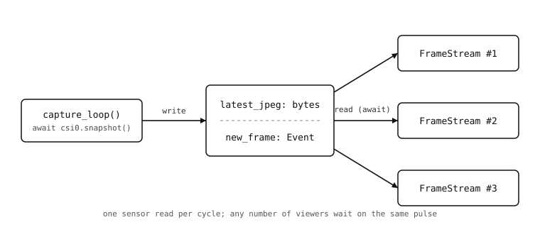

10.4. Condividere un unico loop di cattura tra più spettatori¶
Far chiamare a ciascun client connesso csi0.snapshot() in modo indipendente è uno spreco, e una volta aperti due stream contemporaneamente la situazione peggiora: il sensore consegna i frame al proprio ritmo e ogni cattura duplicata rallenta tutti. L’approccio corretto è un’unica coroutine di cattura che pubblica «l’ultimo frame» in uno slot condiviso, più iteratori per client che leggono dallo slot.

10.4.1. Il task di cattura¶
Una coroutine in background acquisisce i frame con la stessa rapidità con cui il sensore li consegna, comprime ciascuno in JPEG dentro un bytes condiviso e impulsa un evento così che qualsiasi client in attesa si risvegli:
latest_jpeg = None
new_frame = asyncio.Event()
async def capture_loop():
global latest_jpeg
while True:
img = await csi0.snapshot()
latest_jpeg = bytes(img.compress(quality=85).bytearray())
new_frame.set()
new_frame.clear()
La coppia set() / clear() è il pattern dell”impulso. set() sblocca in un colpo solo ogni coroutine attualmente in attesa sull’evento; clear() reimposta immediatamente l’evento così che la successiva wait() si blocchi di nuovo. Con più consumatori (uno spettatore, un altro spettatore, qualsiasi altra coroutine che debba reagire a un nuovo frame), nessun singolo consumatore è responsabile del reset dell’evento e nessuno ruba un risveglio a un altro.
Nota
L’incapsulamento bytes(...) attorno al JPEG è qui fondamentale. bytearray() restituisce una vista nel buffer immagine della camera; la successiva chiamata a snapshot() riscrive quel buffer sul posto con il frame seguente. latest_jpeg sopravvive alla variabile locale img, quindi senza la copia ogni lettore vedrebbe lo slot spostarsi sotto di sé a ogni cattura.
10.4.2. Gli iteratori per client leggono dallo slot¶
L’handler dello stream MJPEG smette di chiamare csi0.snapshot() da solo. Invece, ogni istanza FrameStream attende sull’evento condiviso e legge dai byte condivisi:
class FrameStream:
# One instance per connected client. Each one independently
# waits on the shared new_frame pulse; the capture loop is
# responsible for resetting the event between frames.
def __aiter__(self):
return self
async def __anext__(self):
await new_frame.wait()
if latest_jpeg is None:
return b''
return (b'--' + BOUNDARY + b'\r\n'
b'Content-Type: image/jpeg\r\n\r\n'
+ latest_jpeg + b'\r\n')
Cambia anche la route dello snapshot: non scatena più una cattura, ma restituisce qualunque cosa latest_jpeg contenga al momento:
@app.get('/snapshot.jpg')
async def snapshot(request):
if latest_jpeg is None:
return 'no frame yet', 503
return Response(
body=latest_jpeg,
headers={'Content-Type': 'image/jpeg'},
)
La tupla (body, status) è la scorciatoia di microdot per impostare un codice di stato HTTP senza costruire un microdot.Response. 503 dice sono qui ma non sono pronto – il codice giusto per «richiedi tra un istante».
10.4.3. Eseguire la cattura insieme al server¶
main ha ora due coroutine di primo livello: il loop di cattura e il server HTTP. asyncio.gather() le esegue entrambe, e se una delle due va in crash l’altra viene annullata:
async def main():
await asyncio.gather(
capture_loop(),
app.start_server(host='0.0.0.0', port=80),
)
asyncio.run(main())
Ora il sensore legge un frame per ciclo indipendentemente da quanti spettatori sono connessi. Il primo browser su /stream.jpg vede i frame; lo stesso vale per il secondo, il terzo, il decimo – condividono tutti la stessa cattura, e la cam rimane altrettanto reattiva sulle sue altre route.